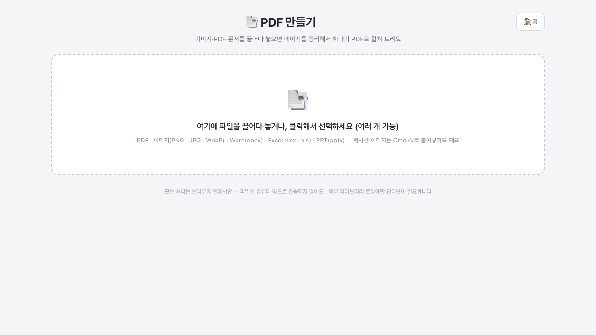
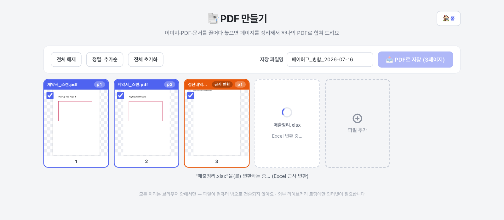
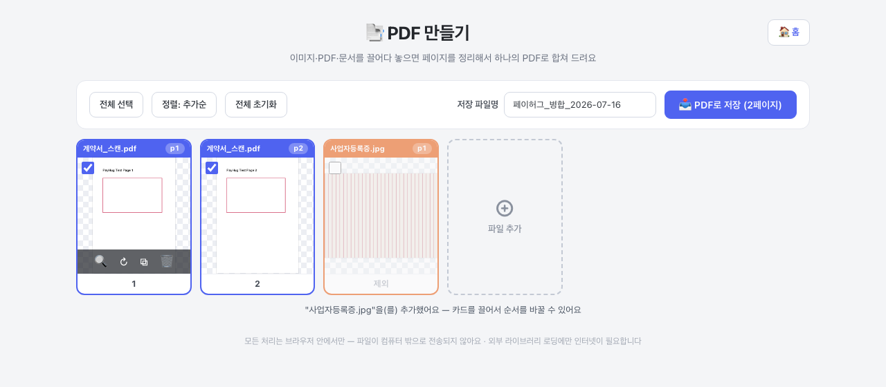
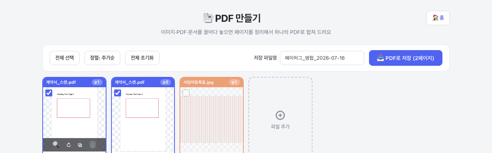

PDF·이미지·문서를 순서 상관없이 한꺼번에 넣으면 됩니다. 클릭해서 선택해도 되고, 캡처한 이미지는 Cmd+V 붙여넣기도 돼요.
· 그대로 잘 들어가는 것 — PDF, 이미지(PNG·JPG·WebP)
· 변환돼서 들어가는 것 — Word(docx)·Excel(xlsx·xls)·PPT(pptx) → 2번 참고
· 안 들어가는 것 — 구형 doc·ppt, HEIC, 한글(hwp) → PDF나 이미지로 변환해서 넣어주세요

docx·xlsx·pptx를 넣으면 자동으로 페이지 이미지로 바꿔서 담아 드려요. 넣는 순간 스피너가 도는 "변환 중" 카드가 먼저 나타나고, 변환이 끝나면 실제 페이지 카드로 바뀝니다 — 변환에 시간이 좀 걸려도 기다리는 동안 이미 들어온 다른 페이지는 그대로 정리할 수 있어요. 변환된 파일 라벨에는 근사 변환 뱃지가 붙는데, 말 그대로 모양이 원본과 조금 다를 수 있다는 뜻입니다 — 글꼴·간격·표 너비가 어긋날 수 있으니, 넣은 뒤 썸네일을 한번 확인해 주세요. 긴 엑셀 시트는 A4 크기로 알아서 잘라서 여러 페이지로 들어갑니다.

파일을 넣으면 페이지가 카드로 펼쳐져요. 파일마다 라벨 색이 달라서 어느 파일에서 온 페이지인지 바로 보입니다.
· 페이지 빼기/살리기 — 카드를 클릭하면 선택/해제가 바뀌어요(왼쪽 위 체크박스를 눌러도 같아요). 해제되면 "제외"로 바뀌고 최종 PDF에 안 들어가요. 지운 게 아니라서 다시 클릭하면 살아납니다.
· 순서 바꾸기 — 선택(체크)된 페이지만 마우스로 끌어서 이동할 수 있어요. 해제된 카드는 클릭해서 먼저 선택하면 됩니다. 카드 아래 숫자가 최종 PDF의 페이지 순서예요.
· 카드에 마우스를 올리면 버튼 네 개가 나와요 — 🔍 확대 미리보기 · ↻ 90° 회전 · ⧉ 복제 · 🗑 삭제.
· 위쪽의 [전체 선택/전체 해제], [정렬: 추가순↔이름순], [전체 초기화]로 한꺼번에 정리할 수도 있어요. 파일을 더 넣으려면 맨 끝 ⊕ 파일 추가 카드를 누르세요.

저장 파일명 칸에 원하는 이름을 쓰고 (기본값: 페이허그_병합_날짜) 오른쪽
[📥 PDF로 저장 (n페이지)] 버튼을 누르면 다운로드 폴더에 저장돼요. 버튼의 페이지 수가 실제로 담기는
수예요 — 체크된 페이지만 들어가니까, 누르기 전에 숫자가 맞는지 한번 확인하세요.
